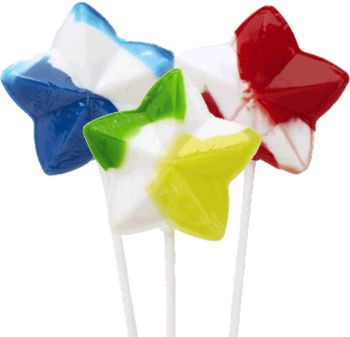
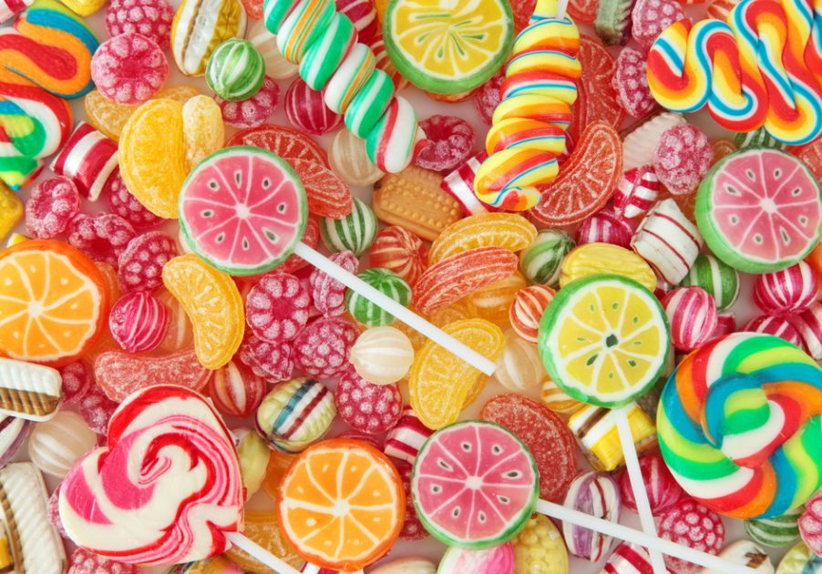

History of the Lollipop The oldest precursor to today’s lollipops comes from ancient Africa and Asia. Archaeologists believe that ancient Chinese, Arabs, and Egyptians all produced fruit and nut confections that they "candied" in honey, which serves as a preservative, and inserted sticks into to make easier to eat. During the Middle Ages, the nobility would often eat boiled sugar with the aid of sticks or handles. In the 17th Century, as sugar became more available in Europe, the English enjoyed boiled sugar candy treats and inserted sticks into them to make them easier to eat, too. In America, the history of the first lollipops has been distorted over time. There is some speculation that lollipops were invented during the American Civil War. Others believe some version of the lollipop has been around in America since the early 1800s. George Smith of New Haven, Connecticut claimed to be the first to invent the modern style lollipop in 1908. He used the idea of putting candy on a stick to make it easier to eat, and initially lollipops were a soft, rather than hard, candy. With the birth of automation in the early 20th Century, we first begin to see the emergence of the lollipop as we know it today. In 1908, in Racine, Wisconsin, the Racine Confectionery Machine Company introduced the first automated lollipop production with a machine that put hard candy on the end of a stick at the rate of 2,400 sticks per hour. Around 1912, Russian immigrant Samuel Born invented a machine that inserted sticks into candy, called the Born Sucker Machine. The City of San Francisco considered it so innovative that they awarded him the keys to the city in 1916. Linguists say the term "lolly pop” literally means "tongue slap,” and it’s believed that London street vendors may have coined this term as they peddled the treat. Some also suggest that "lollipop” may be a word of Romany origin related to the Roma tradition of selling toffee apples on a stick. "Red apple” in the Romany language is loli phaba. However, in America, George Smith trademarked the name in 1931 and he reportedly named the treats after a popular racing horse, Lolly Pop. The name "lollipop” is now in public domain
 whether you are ordering them online or browsing in the supermarket, there are hundreds of types of candy that compete for the attention of people who love these tasty treats. But take it from us. There are few types of candy that are better than the lollipop, if any. And we’re here to tell you why. For one thing, most lollipops last much longer than your average piece of candy. Depending on the size, you could be sucking on a lollipop for half an hour before it’s gone, if not longer. Because lollipops are on sticks, you can conveniently eat them while doing something else, or you could hold them. The choice is yours! Also, lollipops are available in just about any shape, color, and flavor. This is especially true when it comes to our lollipops. We have 20 different flavors to choose from, and we offer a wide range of variations, meaning everyone will be able to find a lollipop they love when they shop with Cima! Lollipops are also substantial enough that you can just eat one and be satisfied, but they’re not so decadent that you couldn’t enjoy a few if you’re in the mood. They also make great party favors and gifts, because let’s be honest, who doesn’t enjoy a good lollipop? These are just some of the many reasons why lollipops are among the best candies out there. For more reasons why you should choose CIMA for your lollipop needs, give us a call today!